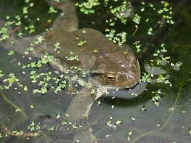
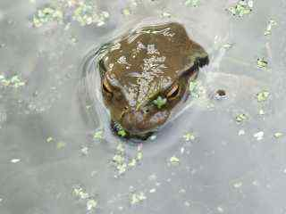
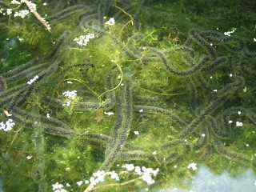

|  | アズマヒキガエルは、近畿以北に生息するヒキガエル（ガマガエル）です。体の色は褐色で、側面に白と黒の斑模様があるのが特徴です。 |
|  | 繁殖期である２～３月頃に、アズマヒキガエルは沼や池を訪れます。ここで交尾と産卵を行います。 |
|  |
アズマヒキガエルの卵はヒモ状で、数メートルもあります。 産卵時は細くて黒いのですが、しだいに水を吸ってゼリー状に変わります。 |
 |
卵を拡大した写真です。チューブの中には黒い点のようなたくさんの胚が見受けられます。 |
 |
１～２週間ほどで孵化すると、たくさんのオタマジャクシで池はにぎやかになります。 しかし、無事にカエルとして成長できるのは、ほんの一握りに過ぎません。 |